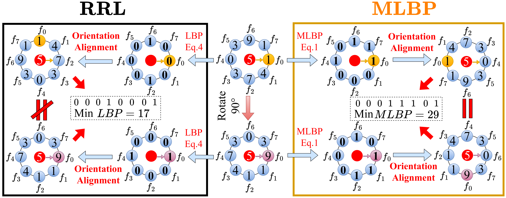

Key Contributions
- Rotation-equivariant Representation: The proposed method improves robustness to image rotations by incorporating adaptive magnitude-based LBP information into convolutional feature extraction.
- Multi-scale Feature Modeling: The method captures local structural patterns at multiple scales, improving representation capacity for complex visual patterns.
- Adaptive Magnitude LBP(MLBP): Compared with traditional LBP-style descriptors, the adaptive magnitude formulation provides more flexible and discriminative local texture encoding.
- CNN-compatible Module: The proposed convolution can be integrated into deep neural networks as a feature extraction component.

Figure 1. Illustration of the MLBP-Conv pipeline with a $3 \times 3$ kernel.

Figure 2. Comparison of cyclic ambiguity in orientation alignment between RRL (using original LBP) and the proposed MLBP, highlighting the stability improvement of MLBP.

Figure 3. The proposed lightweight MLBPConv$^{ms}$.